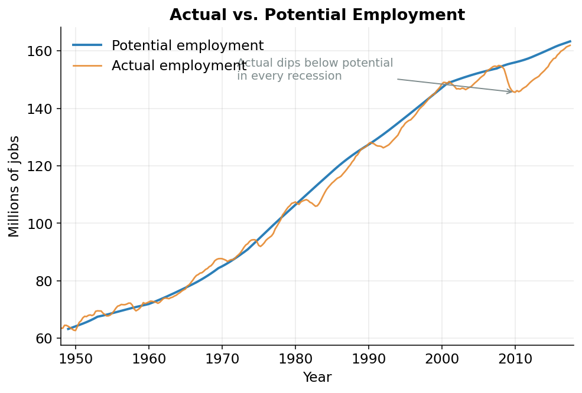

Labor: Counting Hours, Minus the Business Cycle
The idea
We do not want to measure how much work the economy is actually doing right now. We want how much work it would be doing if things were normal: not in a boom, not in a slump. That “if things were normal” version is what the model calls potential. Getting from the actual, wiggly numbers to the smooth potential version is the job of this page, and the method here gets reused for the rest of the model.
What “labor” means here
The amount of labor going into the economy is:
\[ \text{labor} = (\text{number of people working}) \times (\text{hours each one works}) \]
Ten people working 40 hours a week is the same amount of labor as twenty people working 20 hours. Measuring labor takes two counts: a headcount (how many people have jobs) and an hours count (how long each is on the clock). The code handles employment first, then hours. This page follows that order.
Two terms first.
The labor force is everyone who either has a job or is actively looking for one.1
1 Someone who has retired, or who isn’t looking for work at all, is not in the labor force. The labor force is the pool of people available to work.
The natural rate of unemployment is the fraction of that labor force that is unemployed even when the economy is doing fine. It is never zero. At any moment some people are between jobs: they just moved, they just graduated, they’re switching careers. That churn is normal, so a healthy economy still has four or five people out of every hundred looking for work.
The normal, baseline level of unemployment that exists even in good times: from people changing jobs, entering the workforce, or relocating. It is the unemployment rate you’d expect when the economy is neither overheating nor in a slump.
“Potential” means: ignore the wiggle
Think about a thermostat. The temperature in your room is never exactly 70 degrees. It drifts a degree up when the heater kicks off, a degree down before it kicks back on. Asked “how warm is this room?”, you say “about 70.” That “about 70” is the setting, the level the room is built to hold. The drift around it is just the system breathing.
The economy works the same way. In a boom (a stretch when business is unusually strong), firms hire aggressively and more people work than the economy can sustain for long. In a recession (a stretch when business is unusually weak), firms cut back and fewer people work than normal. Employment is always drifting above or below its sustainable setting.
That drift around the economy’s normal level is the business cycle.
The economy’s repeated swings above and below its long-run trend: booms when it runs hot, recessions when it runs cold. The cycle is the temporary wiggle; the trend is the underlying level the economy keeps returning to.
“Potential employment” is the thermostat setting, not the temperature. It is the headcount you’d see if the economy were running at a normal pace: no boom inflating it, no recession deflating it. The distance between the actual headcount and that setting is the employment gap. Positive gap: more people working than is sustainable (hot). Negative gap: fewer than normal (cold).
Building the gap from the labor force
The code starts at the top, with the whole labor force.
If the natural rate says some normal fraction of the labor force is unemployed at any time, then the number working in normal times is the rest. Multiply the labor force by one minus the natural rate. That gives potential employment as counted by the household survey, one of the two ways the government counts jobs.2
2 The government counts jobs two ways. The household survey phones households and asks who has a job. It counts people. The establishment survey asks businesses how many positions they’re filling. It counts jobs. The two disagree, partly because some people hold more than one job. The model estimates each on its own and then reconciles them; the main story only needs the household count below.
The calculation, copied from build_base_series in employment.py:
ehhcfe = (1 - q["rucfe"] / 100) * q["lcfe"]
empgap = (q["ehhc"] / ehhcfe - 1) * 100
e_dif = q["etotal"] - q["ehhc"]
re_dif = e_dif / q["ehhc"]Line one builds potential employment, named ehhcfe. lcfe is the labor force; rucfe is the natural rate of unemployment in percent. (1 - rucfe/100) is the fraction of the labor force that works in normal times. Multiplying by the labor force gives the normal, sustainable headcount.
Line two builds the employment gap, named empgap. ehhc is the actual household headcount. The ratio ehhc / ehhcfe compares today’s headcount to the normal one; subtracting 1 and multiplying by 100 makes it a percentage. If empgap is +1.5, actual employment is one and a half percent above its sustainable level: hot. If it’s -3, employment is three percent below normal: a deep slump.
empgap is the economy’s thermometer. It shows up again and again, because it is the signal the model uses to detect which way the cycle is pushing.
Smoothing the wiggle: the regression idea
The remaining task: take a bumpy, real-world employment series and recover the smooth potential path underneath it.
The tool is a regression. A regression is a disciplined way of drawing a line through scattered data. Plot a cloud of points and ask a computer for the single straight line that comes closest to all of them. That line summarizes the trend and ignores the scatter. A regression does that, except it can lean on several explanations at once, not just time.
For each employment series, the regression explains the bumpy data with two kinds of variables:
- The cyclical signals: the employment gap
empgapand its quarter-to-quarter change. These capture the wiggle: how much of today’s number is the boom or the slump talking. - A set of piecewise time trends. A time trend is a steady drift as the years pass: a straight line sloping across the decades. Piecewise means the model doesn’t force one slope across all of history. It allows a different straight-line slope for each era (the 1950s, the 1970s, the years after 2001, and so on), because the workforce grew at genuinely different rates in different decades. Several straight segments, connected end to end.
The regression figures out how much weight each variable deserves. Then the payoff: keep the trend part and throw away the cyclical part. The trend part is the smooth, sustainable path. That is potential. The cyclical part is the wiggle we wanted gone.
Subtracting the cycle, line by line
The function that does the throwing-away is named strip_cycle. Verbatim from employment.py:
def strip_cycle(y_hat, X, results):
"""
Subtract the cyclical contributions (empgap, Δempgap, dummy_census)
from a fitted series to recover the "potential" or trend component.
EViews syntax:
series y_fe = y_hat - (empgap * @coefs(2))
- (Δempgap * @coefs(3))
- (dummy_census * @coefs(4))
@coefs(2..4) are the second, third, fourth coefficients: the three
cyclical regressors in the order they appear in the equation.
"""
return (
y_hat
- X["empgap"] * results.params["empgap"]
- X["delta_empgap"] * results.params["delta_empgap"]
- X["dummy_census"] * results.params["dummy_census"]
)The logic is one sentence. y_hat is the regression’s full prediction, trend and wiggle together. Each line below it pulls one cyclical piece back out.
Take X["empgap"] * results.params["empgap"]. The regression learned how strongly the cycle pushes employment around: that learned strength is the coefficient (results.params["empgap"]). Multiply that strength by how hot or cold the economy actually was (X["empgap"]), and you get the part of today’s employment that was purely the boom or slump talking. Subtract it, and that contribution is gone. The function does the same for the change in the gap (delta_empgap) and for a one-off bump that has nothing to do with the cycle.3
3 dummy_census is an on/off switch that flips to 1 only in the handful of quarters when the government hired a wave of temporary Census workers (1970, 1980, 1990, 2000, 2010). That hiring spike isn’t part of the real trend, so the model strips it out alongside the cyclical terms.
What’s left is the trend: the smooth, cycle-free path. That leftover is potential employment. Every “potential” series in this model (employment, hours, productivity, all of it) is built by this same two-step move: fit a line that explains both trend and cycle, then subtract the cycle back off.
Figure 1 shows the result. The bumpy line is actual employment; the smooth line riding through the middle is potential. Actual employment sags below potential in every recession and climbs above it in every boom: the drift around the setting.

Hours
Headcount is half of labor. The other half is how long each person works.
The model handles hours the same way (fit a trend-plus-cycle line, strip the cycle), applied to a different quantity: average weekly hours, the typical number of hours one worker puts in per week. The code takes each sector’s total hours and divides by the number of workers in it.
weekly[f"mhe{s}"] = (q[f"mh{s}"] / q[f"e{s}"]) * 1000 / 52The units need care. mh is total hours worked over a year, measured in billions of hours; e is the number of workers, in millions. Billions divided by millions leaves a factor of a thousand, so the raw ratio comes out in thousands of hours per worker per year. The 1000 converts those thousands into actual hours per worker per year, and the 52 spreads that yearly figure across the 52 weeks of the year, giving hours per worker per week. The same cycle-stripping then recovers potential weekly hours: a normal work-week, with the overtime of a boom and the cutbacks of a slump removed.4
4 One exception: military reservists are paid for fixed training periods set by law, so their hours barely move with the economy. There’s no cycle to strip, so the model uses their actual hours.
Multiply potential headcount by potential weekly hours: potential labor, the normal-times amount of work the economy supplies. The first input is built.
Next
Capital. A dollar’s worth of one asset is not the same as a dollar’s worth of another: a delivery truck and a desktop computer earn their keep very differently. The next page weighs each kind of capital by what it would cost to rent.